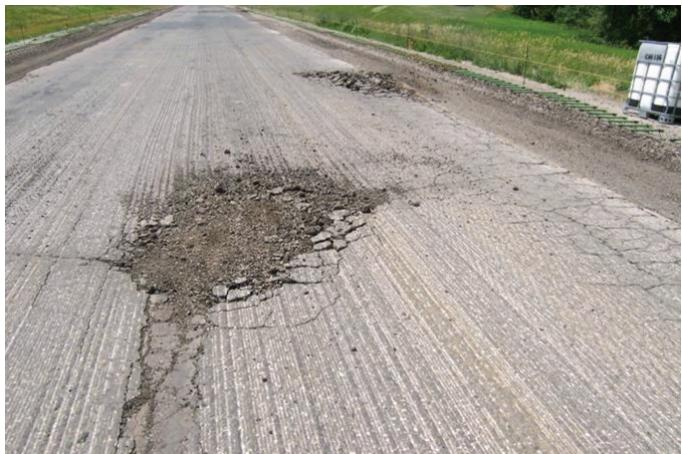
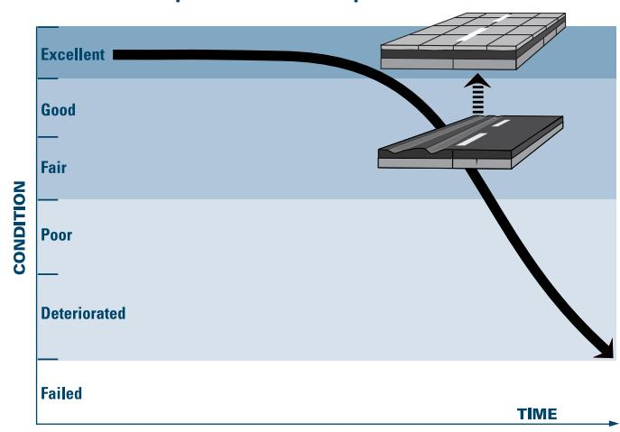
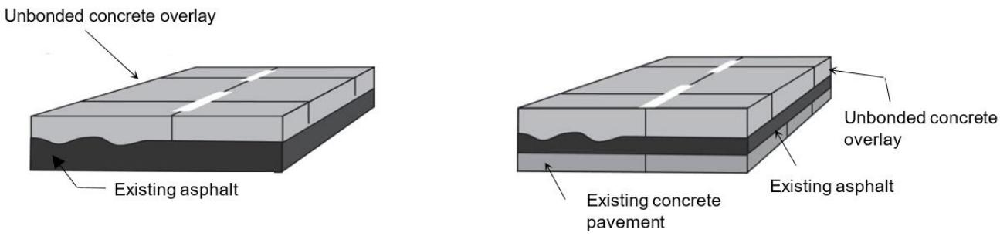
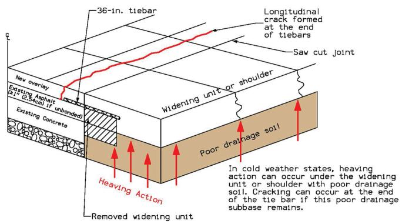

COA-B and COA-U Overlay Bonding
COA‑B and COA‑U overlay bonding are pavement rehabilitation techniques that place a new thin concrete slab over an existing asphalt surface, either by directly bonding the concrete to the asphalt (COA‑B) or by inserting a separation layer such as a non‑woven geotextile or thin hot‑mix asphalt interlayer (COA‑U). The systems aim to restore structural capacity and create a durable monolithic or isolated composite slab that prevents delamination, reflective cracking, stripping, and premature distress while preserving the roadway profile and drainage [4][8]. In bonded applications the concrete must adhere to at least three to four inches of sound asphalt so shear transfer makes the two layers act as a single structural unit, whereas unbonded designs rely on the isolation layer to control moisture movement and reflective cracking, both requiring proper surface preparation, adequate drainage, and air‑entrained, low‑permeability concrete mixes often reinforced with fibers [9][10].
Sources (13)
Purpose and design objectives
The design addresses the problem of inadequate interaction between a deteriorated existing pavement surface—whether asphalt or aging concrete—and a newly placed thin concrete layer. Deteriorated existing pavement that would otherwise compromise structural capacity and lead to uncontrolled cracking. Lack of a reliable structural link between a newly placed concrete slab and the underlying asphalt or composite pavement can accelerate distress such as delamination, premature cracking, reflective cracks, spalling, and reduced service life. Excess stresses that arise when an unbonded concrete‑pavement overlay is placed over a compliant interlayer, such as a nonwoven geotextile or asphalt layer, further challenge the interface, and design therefore requires a special analysis using a 2‑inch asphalt interlayer and then increasing the calculated overlay thickness by half an inch. Prevention of stripping or shearing, which is the loss of bond between the asphalt binder and aggregate in an existing pavement, must also be addressed, especially thin overlays with poor drainage characteristics are most susceptible to stripping/shearing. Creating a durable, load‑bearing pavement by joining a thin concrete layer to an existing asphalt base so that the two materials act as a single monolithic slab. The development and maintenance of the bond between the two layers is directly considered in the overlay thickness design, and is essential to the performance of the system. Minimum of 3 in. of good condition asphalt remains prior to an UBCOA. Minimum of 4 in. of good condition asphalt remains for a BCOA prior to the overlay. The minimum thickness of structurally sound asphalt required for bonding is 3 in. Surface of the existing asphalt pavement should be properly cleaned and prepared, allowing the existing pavement to provide uniform support for the new concrete. When it becomes necessary to reestablish separation for a COC‑U overlay, placing concrete on a nonwoven geotextile fabric or applying a wax‑based curing compound over the bottom of the repair is more effective than trying to build back the same layers. By limiting milling depth, preserving the roadway profile, and employing a separation (geotextile) layer that isolates the overlay, the design seeks to restore structural integrity, control moisture movement, and provide a durable low‑permeability surface without full reconstruction. Loss of the bond (or failure to develop an adequate bond) will accelerate the development of pavement distress and reduce the overlay’s service life, especially for thinner overlays. [4][5][8][9][10][11][12][13]
The following figure illustrates the construction equipment handling the damaged asphalt remaining after milling.

Construction equipment hauling damage of remaining asphalt after milling [11]The image displays a paved road surface with visible longitudinal grooves and two significant areas where the pavement material has been broken up, exposing loose aggregate. This visual evidence illustrates the potential for construction damage to occur if milling operations are not carefully managed during overlay preparation. Such distress compromises the structural integrity of the base, which must be in good condition and meet specific thickness requirements for a successful bonded or unbonded concrete overlay.
[4] — Bonded Overlays (pp. 32–33); [5] — 1. Introduction (p. 33); [8] — Asphalt Stripping/Shearing (p. 17), Concrete on Asphalt (p. 11), Interface Considerations (p. 28); [9] — Ch. 18 (p. 346); [10] — Ch. 1 (p. 18), Ch. 3 (pp. 33–46), App. A (pp. 102–108), App. B (p. 119), App. C (p. 131); [11] — 5. Condition assessment profile (pp. 12–45); [12] — Surface Preparation for Existi… (p. 38); [13] — 2. Overview of Thin Concrete O… (pp. 13–33)
Across the guides, COA‑B and COA‑U overlay bonding must satisfy a unified set of functional, structural, durability, safety, and serviceability objectives. Functionally, the system must provide a stable working platform that can support construction traffic and later serve as a load‑carrying slab for regular vehicles while eliminating drainage deficiencies and ensuring a dry, uniformly supported base. Structurally, the overlay must be bonded to at least three inches of sound asphalt (preferably four) so that the concrete and asphalt act as a monolithic composite capable of carrying design traffic loads; thicknesses typically range from two to six inches for bonded overlays and six to twelve inches for unbonded slabs, with joint spacing limited by overlay thickness to control bending stresses. Durability objectives focus on establishing and preserving an adequate bond, preventing hydraulic pressure‑induced stripping or shearing, controlling moisture loss through proper curing, using appropriate mix designs (air‑entrainment, low permeability, fiber reinforcement), and providing effective surface and subsurface drainage to resist freeze‑thaw cycles, scouring, and deicing chemicals. Safety requirements call for sufficient sound asphalt thickness to support heavy equipment, avoidance of water infiltration or delamination that could create hazardous surface conditions, and construction practices (e.g., early joint cutting, ridge control) that protect the thin separator layer and maintain traffic safety during placement. Serviceability goals include limiting crack widths, maintaining load transfer across joints, preserving ride quality and low‑noise performance, and ensuring that any distress remains localized so the overlay remains functional throughout its intended service life. “The development and maintenance of an adequate bond between the concrete overlay and the existing asphalt pavement is critical to the performance of a COA–B overlay.” Likewise, “Loss of the bond (or failure to develop an adequate bond) will accelerate the development of pavement distress and reduce the overlay’s service life, especially for thinner overlays.” The design must also “Correct any and all drainage problems, addressing both top‑down and bottom‑up drainage,” and “The overlay design must first ensure that the existing pavement is repaired to a good or at least fair condition, eliminating wide cracks, voids, potholes, severe alligator cracking, and any loss of subgrade support before bonding.” [4][8][9][10][11][12][13]
The following figure illustrates the distinction between bonded and unbonded overlays of existing asphalt and composite pavements.

Pavement condition deterioration curve showing the transition from existing asphalt to a new concrete overlay. [10]The figure displays a graph plotting pavement CONDITION against TIME, illustrating a performance curve that drops from Excellent through Good and Fair into Poor and Deteriorated states. A schematic shows an existing asphalt surface transitioning to a new concrete slab overlay via an upward arrow, representing the rehabilitation process described in the source context as placing “Concrete overlays on existing asphalt-surfaced pavements”. The visual progression from a deteriorated state to a restored condition supports the concept of using bonded or unbonded overlays to restore structural capacity and serviceability.
[4] — Bonded Overlays (pp. 32–33); [8] — Asphalt Stripping/Shearing (p. 17); [9] — Ch. 18 (p. 346); [10] — Ch. 3 (pp. 33–44), Ch. 5 (pp. 51–52), App. A (pp. 104–108), App. B (p. 119), App. C (p. 131); [11] — 5. Condition assessment profile (p. 45); [12] — Surface Preparation for Existi… (p. 38); [13] — 2. Overview of Thin Concrete O… (pp. 13–36)
Scope and applicability
“COA‑B and COA‑U concrete overlays are suitable for existing asphalt pavements—whether full‑depth slabs or composite (asphalt‑overlaid concrete) decks—that possess a sound base. The guides note that “Concrete on asphalt (COA) overlays can be designed to address a broad range of existing pavement conditions on both composite and full-depth asphalt pavements.” Minimum remaining asphalt thickness is commonly cited as “at least 3 to 4 in. of sound asphalt,” while another source specifies “a minimum of 3 inches of pre‑existing asphalt concrete that is in good, sound condition” for bonded designs and “minimum of 4 in. of good condition asphalt remains for a BCOA.” For unbonded designs the requirement may be as low as “minimum of 3 in. of good condition asphalt remains prior to an UBCOA.”
Both bonding options can match pavement condition: “Both bonded (COA–B) and unbonded (COA–U) options enable designs to cost‑effectively match the condition of the existing asphalt—from deteriorated to good—as well as geometric parameters.” The bonded approach is limited to pavements that are already in, or can be economically restored to, good structural condition; it creates a “composite paving layer that acts monolithically” and permits thinner sections. Typical COA‑B thicknesses are described as “relatively thin (typically 2 to 6 inches) concrete layers,” with the design often “generally 4 to 6 in.” For overlays less than 5 in. thick, “high‑modulus structural fibers are often used” and macrofibers provide load transfer when panels are small (“approximately square panels, typically in the range of 3 to 8 ft”).
Unbonded overlays are selected when a separation layer is desired or when the existing asphalt cannot reliably support a bond. Thicknesses for COA‑U are reported as “Unbonded overlay thicknesses typically range from 6 to 12 in.” and also as “thin (≤ 5‑in.) concrete overlays … typically 2.5 in. to 4.5 in. thick” for specific thin‑overlay applications. When the overlay exceeds about 7 in., “doweled joints are used for unbonded overlays of pavements that will experience significant truck traffic.” Fiber‑reinforced or high‑modulus mixes are recommended for thicknesses under five inches to improve fracture toughness.
Separation media for COA‑U may be a non‑woven geotextile fabric, a wax‑based curing compound, or a thin hot‑mix asphalt layer. The guides state that “When it becomes necessary to reestablish separation for a COC-U overlay, placing concrete on a nonwoven geotextile fabric or applying a wax-based curing compound over the bottom of the repair is more effective than trying to build back the same layers,” and that “The separation layer can be a non‑woven geotextile layer or a thin (typically 1 in.) hot‑mix asphalt (HMA) overlay.” Use of a geotextile also requires drainage: “When using a non‑woven geotextile, it is very important to provide a drainage outlet.”
Both options assume adequate underlying drainage and limited existing rutting (“Direct placement without milling is a viable option when rutting in the existing asphalt pavement does not exceed 2 in. and there is no significant surface deterioration or stripped layers in the asphalt.”) and require that surface stripping be minimal. Pre‑overlay repairs such as milling and patching are required to bring the asphalt “to good condition or brought up to good condition by milling and patching.”
COA‑U thin overlays are especially appropriate for jointed‑concrete or HMA pavements showing premature joint deterioration, shoving, rutting, reflective cracking, or other surface distress where the underlying slab and subbase remain sound. The guidance notes that “thin (≤ 5‑in.) concrete overlays are discussed as a solution for pavements experiencing premature joint deterioration” and that “Place a separation layer (asphalt or geotextile fabric). This layer prevents bonding—i.e., isolates the concrete overlay from the existing underlying pavement—and minimizes reflective cracking.” These thin unbonded systems are commonly used on urban arterial roadways, ramps, and sections built on low‑ or high‑plasticity clays or shallow bedrock where traffic must be maintained. Material specifications include “a durable, air‑entrained mix with reduced permeability,” often incorporating supplementary cementitious materials such as “replacement of 30 percent Portland cement with ground granulated blast‑furnace slag” and fiber reinforcement for added toughness. Joint spacing is kept short (“short joint spacing to minimize the formation of additional (natural) cracks that occur on thinner concrete overlays”).
Thus, COA‑B bonding is appropriate when a structurally sound asphalt base of at least three to four inches exists and can be bonded to create a monolithic composite, typically using 4–6 in. thick conventional or fiber‑enhanced concrete. COA‑U bonding is appropriate when a separation layer is required, the asphalt condition ranges from good to moderately deteriorated, overlay thickness may range from thin (≤5 in.) to thicker (6–12 in.) sections, and materials such as non‑woven geotextile, wax‑based curing compounds, or thin HMA layers are employed to isolate the new concrete and control reflective cracking. [8][9][10][11][13]
The following figure illustrates these bonding methods as documented by Harrington and Fick in 2014.

Schematic diagrams of unbonded concrete overlay configurations on existing asphalt and composite pavement structures. [9]The figure displays two cross-sectional views of pavement rehabilitation systems, both featuring a new layer labeled “Unbonded concrete overlay” placed atop an existing surface. The left diagram illustrates the overlay on a base identified as “Existing asphalt,” while the right diagram shows the same overlay applied over a composite structure consisting of “Existing concrete pavement” and an intermediate layer of “Existing asphalt.”
[8] — Concrete on Asphalt (p. 11), Interface Considerations (p. 28); [9] — Ch. 18 (p. 346); [10] — Ch. 1 (p. 18), Ch. 3 (pp. 33–46), Ch. 5 (pp. 51–52), App. A (pp. 102–106); [11] — 5. Condition assessment profile (pp. 12–45); [13] — 2. Overview of Thin Concrete O… (pp. 13–36)
The guides concur that COA‑B and COA‑U bonded overlays are only viable when the existing asphalt substrate is sound, sufficiently thick, and capable of forming a durable bond. When any of the following conditions exist, designers should select an alternative repair or overlay strategy:
- The pavement cannot be placed in at least a fair condition; wide cracks, subsurface voids, potholes, severe alligator cracking or loss of subgrade support remain unrepaired – “repairs need to be made to place the existing pavement in good condition or at least in fair condition.”
- The remaining hot‑mix asphalt layer is thinner than required – “The minimum remaining HMA needs to be at least 3 in. (75 mm), preferably 4 in. (100 mm)” and “the minimum thickness of structurally sound asphalt required for bonding is 3 in.”; when the thickness falls below three inches, “relatively thin (3 in. or less) asphalt surface layer” makes bonding unreliable.
- Excessive milling would be necessary – “too much milling (for either repair or preparation) will reduce structural capacity,” and “If the thickness is not adequate, construction equipment can damage the asphalt leading to the need for additional repairs.”
- Surface temperatures exceed 120 °F and cannot be cooled – “When HMA surface temperatures are greater than 120°F (49°C), the surface should be cooled by applying water … If the surface cannot be cooled sufficiently, placement may need to be rescheduled.”
- The existing asphalt exhibits significant distress that cannot be cost‑effectively restored – “rut depths greater than two inches,” “surface distortions,” and “the existing asphalt can be in a moderately deteriorated to poor condition, but the asphalt surface must be uniform.” In such cases “A COA–B overlay should only be considered for an existing asphalt‑surfaced pavement that is in (or can cost‑effectively be restored to) good structural condition.”
- Stiffness contrast or high effective modulus – “the effective k value of the materials below the asphalt be limited to 1,000 psi/in,” and when “the asphalt layer is significantly stiffer than the concrete layer (e.g., the thickness of the asphalt is more than twice the thickness of the concrete overlay)” reflective cracking becomes likely; the guides recommend using BCOA‑ME or other methods that address stiffness – “BCOA‑ME is the only design procedure that evaluates the relative stiffnesses of the asphalt and concrete layers in different climates to predict the potential for reflective cracking of the concrete layer over cracks in the asphalt.”
- Poor drainage or hydraulic pressure on thin overlays – “Thin overlays with poor drainage characteristics are most susceptible to stripping/shearing,” and “thin COA‑B overlays on an existing asphalt pavement that does not withstand hydraulic pressure under repeated dynamic traffic loads.”
- Presence of a nonwoven geotextile interlayer over concrete – “When designing an unbonded overlay of an existing concrete pavement with a nonwoven geotextile interlayer, a modified approach using the AASHTO Pavement ME Design Guide must be adopted,” and because “There is no option, however, for choosing and characterizing a nonwoven geotextile layer,” the overlay thickness should be increased – “the resulting overlay thickness should be increased by 0.5 in., according to German design practices.”
- Compromised or damaged separation layer – “it may not be possible to salvage the separation layer because this layer may be damaged as part of the distress being repaired or during the removal process,” and “removing the concrete overlay will damage and dislodge portions of the separation layer or underlying pavement, leaving an uneven surface for the base of the repair.” In these situations “placing concrete on a nonwoven geotextile fabric or applying a wax‑based curing compound over the bottom of the repair is more effective than trying to build back the same layers.”
- Adjacent full‑depth PCC patches – “it is important that the overlay does not bond to the PCC patch when the adjacent panel is asphalt,” because “The differential movement at the overlay interface will often result in cracking of the overlay.”
When any of these limitations are present, the guides advise employing alternative designs such as unbonded overlays with separation layers, modified AASHTO ME procedures, increased overlay thickness, geotextile or wax‑based curing interfaces, or entirely different pavement rehabilitation methods. [4][5][8][10][11]
[4] — Bonded Overlays (pp. 32–33); [5] — 1. Introduction (p. 33); [8] — Asphalt Stripping/Shearing (p. 17), Interface Considerations (p. 28); [10] — Ch. 3 (pp. 33–46), App. A (pp. 102–106); [11] — 5. Condition assessment profile (p. 45)
Design inputs and requirements
The design of COA‑B and COA‑U bonded overlays begins with a comprehensive site description that documents Foundation support conditions, Required pre-overlay repairs, panel dimensions, joint layout, and Maximum overlay thickness. Existing‑pavement information must include an evaluation of the existing concrete or asphalt to confirm it can serve as a stable subbase; The existing concrete should be evaluated for its ability to provide a stable subbase for the unbonded overlay and to resist future deterioration. For bonded overlays the remaining surface must retain a minimum thickness of sound asphalt—minimum of 3 in. of good condition asphalt remains prior to an UBCOA for COA‑U and minimum of 4 in. of good condition asphalt remains for a BCOA—for COA‑B—or be milled and patched to achieve that condition. Traffic considerations require confirming that the remaining surface can provide a stable working platform capable of withstanding construction loads; the minimum thickness of remaining asphalt to be overlaid must be adequate to provide a stable working platform capable of withstanding all anticipated construction traffic (specifically, trucks loaded with concrete); this is typically at least 3 to 4 in. of sound asphalt. The design also records expected traffic control during construction, as exemplified by Two‑way, two‑lane traffic was maintained during construction.
Material inputs include selection of overlay materials and concrete mixture design. Concrete Mixture Design. Conventional concrete paving mixtures are generally used for unbonded overlays, with the exception of mixtures that incorporate macrofibers or mixtures designed to accommodate an accelerated construction window. An optimized “durable” concrete mixture … a concrete mixture with adequate air entrainment properties and reduced permeability … the replacement of 30 percent portland cement with ground granulated blast furnace slag may be specified. Overlay thicknesses are defined by service‑load demands; Unbonded overlay thicknesses typically range from 6 to 12 in. Thin high‑performance overlays may be as thin as 2½ in. to 4½ in., and a separation layer such as a geotextile fabric is required, with the milling limit the maximum ridge height of the milled surface could not exceed ¼ in., primarily due to the use of a geotextile fabric as a separation layer.
Environmental and geotechnical factors focus on drainage and soil conditions. During the evaluation and design stages of an unbonded concrete overlay project, the existing subgrade drainage should be evaluated. The soils on the project included both low and high plasticity clays, with some areas of shallow bedrock.
By integrating these site, traffic, material, environmental, geotechnical, and existing‑condition inputs, designers can develop COA‑B or COA‑U overlays that achieve a durable bond and meet performance objectives. [10][11][13]
[10] — Ch. 3 (pp. 33–41), Ch. 5 (pp. 51–52); [11] — 5. Condition assessment profile (p. 45); [13] — 2. Overview of Thin Concrete O… (pp. 32–35)
Design methods and criteria
Pre‑overlay repairs are required to bring the existing pavement to at least fair condition: “repairs need be made to place the existing pavement in good condition or at least in fair condition”. Surface preparation for bonding relies on shotblasting: “The most common method used to prepare a concrete surface is shotblasting” and “Surface preparation of the existing pavement involves producing a roughened surface that will enhance bonding between the existing pavement and the overlay.” When milling is employed, any micro‑cracking must be removed by additional blasting: “If milling is used to lower the pavement elevation, any resulting microcracking should be removed by shotblasting or high‑pressure water blasting”.
A minimum thickness of structurally sound hot‑mix asphalt must remain as a bonding base. The guides require “minimum remaining HMA needs to be at least 3 in. (75 mm), preferably 4 in. (100 mm)” and further specify “The minimum thickness of structurally sound asphalt required for bonding is 3 in.” For unbonded overlays the threshold is “minimum of 3 in. of good condition asphalt remains prior to an UBCOA”, while bonded overlays demand “minimum of 4 in. of good condition asphalt remains for a BCOA”. If the surface temperature exceeds 120 °F, cooling water must be applied: “When HMA surface temperatures are greater than 120°F (49°C), the surface should be cooled by applying water”.
Overlay thickness is selected from the range “The design thickness for COA–B overlays is generally 4 to 6 in.” For panels thinner than about 5 in, high‑modulus structural fibers are added: “For bonded overlays less than 5 in., high‑modulus structural fibers are often used”. German practice adds an empirical increase: “the resulting overlay thickness should be increased by 0.5 in., according to German design practices”.
Unbonded designs that incorporate a non‑woven geotextile interlayer follow a modified AASHTO ME approach: “When designing an unbonded overlay of an existing concrete pavement with a nonwoven geotextile interlayer, a modified approach using the AASHTO Pavement ME Design Guide must be adopted”. The interlayer is modeled as a 2‑inch asphalt layer: “It is recommended that an analysis using a 2 inch asphalt interlayer be performed”.
Support modulus characterization and reflective‑cracking prediction use the BCOA‑ME model: “characterization of the modulus of foundation support, k”, “effective k value of the materials below the asphalt be limited to 1,000 psi/in.” and “BCOA‑ME is the only design procedure that evaluates the relative stiffnesses of the asphalt and concrete layers in different climates to predict the potential for reflective cracking”.
Panel geometry follows joint‑pattern guidance: “The recommended joint pattern for COA–B overlays results in small, approximately square panels, typically in the range of 3 to 8 ft, with a preferred slab size of approximately 6 ft.” Joint spacing inputs are required: “joint spacing of 72 in” and for unbonded slabs “For overlays ≤ 6.0 in. thick, transverse joint spacing in feet should not exceed 1.5 times the thickness of the overlay in inches” with a typical value “jointed at approximately five‑foot spacing”.
Joint cutting rules are defined by several empirical relationships: sawcut depth is generally “overlay thickness plus 1/2 in.” (“Joints in COC–B overlays must be cut or formed exactly over the joints in the existing pavement and through the full thickness of the overlay (with sawcut depths often specified as the overlay thickness plus 1/2 in.)”); over non‑working or tied joints the depth may be reduced to “one-half the overlay thickness (T/2)” (“Overlay joints cut or formed over nonworking, tied joints need only be cut to one-half the overlay thickness (T/2) to ensure crack control.”); in thickened sections the limit is “T/3” (“sawcut depths need to be T/3 in the thickened section”). Minimum joint width must accommodate the underlying opening: “must be at least as wide as the joint opening below the sawcut or sealant reservoir” and “The joint need only be as wide as a single sawcut blade but must be wide enough to allow the joint to be sealed or filled (3/16 in. minimum width per ACPA [2018])”.
Construction procedures include direct placement when rut depth ≤ 2 in. and surface condition is acceptable: “Direct placement without milling is a viable option when rutting in the existing asphalt pavement does not exceed 2 in. and there is no significant surface deterioration or stripped layers in the asphalt.” Otherwise, milling to achieve the “Old Asphalt, Milled & Clean” condition is performed. Concrete placement follows temperature control and immediate curing with an enhanced rate: “Curing compounds are applied at twice the normal rate”. Joint sawing begins as soon as strength permits: “Joint sawing should commence as soon as the concrete has developed sufficient strength for joints to be cut without significant raveling.” Early opening times can be predicted by maturity testing: “Early opening times can be identified by the use of maturity measurements”.
Unbonded overlays incorporate a separation layer to mitigate reflective cracking: “Place a separation layer (asphalt or geotextile fabric). This layer prevents bonding—i.e., isolates the concrete overlay from the existing underlying pavement—and minimizes reflective cracking.” Installation may involve a geotextile fabric: “Installation of the geotextile fabric separation layer”.
Drainage and utility considerations are addressed before milling: “Correct any and all drainage problems, addressing both top-down and bottom-up drainage” and “Removal of manholes and inlet structures to an elevation below the depth of milling”. Full‑width milling of deteriorated concrete is specified as “Milling 4 in. of the existing concrete” with the goal of preserving pre‑overlay elevation.
These procedures, empirical limits (k ≤ 1,000 psi/in., thickness increase 0.5 in., joint spacing ≤ 1.5 × thickness, sawcut depths T+½ in., T/2, T/3), and the BCOA‑ME stiffness model constitute the design tools used for COA‑B and COA‑U overlay bonding. [4][5][10][11][13]
[4] — Bonded Overlays (pp. 32–33); [5] — 1. Introduction (pp. 33–46); [10] — Ch. 3 (pp. 44–46), App. A (pp. 103–108), App. C (p. 131); [11] — 5. Condition assessment profile (p. 45); [13] — 2. Overview of Thin Concrete O… (pp. 13–33)
The design of COA‑B (bonded) and COA‑U (unbonded) concrete overlays is governed by a set of performance‑based criteria that must be satisfied before placement and throughout service life. First, the existing asphalt pavement must be repaired to at least fair/good condition; wide cracks, voids, potholes, alligator cracking, or loss of subgrade support must be eliminated. The guides require “the minimum remaining HMA needs to be at least 3 in. (75 mm), preferably 4 in. (100 mm)” and state that a “minimum of 4 in. of sound asphalt must remain after pre‑overlay repairs for a BCOA, whereas unbonded overlays require at least three inches of uniform asphalt that may be moderately deteriorated to poor.” The surface temperature must not exceed the early‑age cracking limit: “When HMA surface temperatures are greater than 120°F (49°C), the surface should be cooled by applying water,” and the existing surface must exhibit rutting no greater than 2 in. before direct placement.
Overlay thickness ranges reflect the bonding condition. For bonded overlays, the guides specify “the design thickness for COA‑B overlays is generally 4 to 6 in., depending on the desired load‑carrying capacity and service life of the overlay,” with “relatively thin (typically 2 to 6 inches) concrete layers” cited for both overlay types when a thin solution is pursued. Unbonded overlays are described as ranging from “2–6 inches” in thin applications up to “6 to 12 in.” in thicker designs, and the typical thin‑unbonded case is limited to “2.5–4.5 in. (or a specific 4‑in. case).” When overlay thickness falls below five inches for COA‑B or below six inches for COA‑U, high‑modulus structural fibers are recommended to improve fracture toughness and post‑cracking behavior.
Bonding assumptions differ: COA‑B assumes a fully bonded interface that must sustain shear transfer without delamination, while COA‑U assumes no shear transfer. Consequently, COA‑U requires an isolation layer: “Place a separation layer (asphalt or geotextile fabric). This layer prevents bonding—i.e., isolates the concrete overlay from the existing underlying pavement—and minimizes reflective cracking.” The separation may be “a non‑woven geotextile layer or a thin (typically 1 in.) hot‑mix asphalt (HMA) overlay,” and when a geotextile is used, drainage must be provided. For unbonded overlays thicker than 7 in., dowel bars are specified to accommodate significant truck traffic.
The design methodology adopts a modified AASHTO Pavement ME approach that treats the asphalt interlayer as a distinct 2‑in. layer and incorporates dominant variables—traffic loading (W₁₈), load‑transfer coefficient (J), drainage coefficients for each layer (C_d_i), concrete modulus of rupture (σ_Λc), and the composite k‑value. After a preliminary thickness is obtained, “once an adequate design has been calculated, the resulting overlay thickness should be increased by 0.5 in., according to German design practices and expertise,” providing an implicit safety margin for the more compliant interlayer.
Joint layout and cutting follow strict geometric limits to control bond stresses: panels are kept approximately square with a maximum plan dimension of six feet and an aspect ratio not exceeding 1.5:1; transverse joint spacing must not exceed “1.5 times the thickness of the overlay in inches” for overlays ≤ 6 in., and “2.0 times … but never more than 15 ft” for thicker sections. Saw cuts are placed over existing joints and extend “through the full thickness of the overlay plus ½ in.” (or half‑thickness for non‑working joints), while in areas of localized thickening cut depths are limited to one‑third of the total overlay thickness (T/3) to preserve structural integrity.
Material performance requirements include curing at an accelerated rate: “Curing compounds should be applied at twice the rate typical for conventional concrete practices,” and the foundation modulus (k) must be characterized but capped at 1,000 psi/in. to avoid overstating support. Adequate subgrade and surface drainage are mandated to prevent stripping or delamination that could precipitate premature failure.
Collectively, these criteria—substrate condition thresholds, minimum thicknesses, temperature limits, separation‑layer requirements, design variable sensitivities, added thickness safety margin, joint geometry rules, curing practices, and k‑value caps—constitute the reliability framework and implicit factors of safety that COA‑B and COA‑U overlay bonding must satisfy. [4][5][9][10][11][13]
[4] — Bonded Overlays (pp. 32–33); [5] — 1. Introduction (p. 33); [9] — Ch. 18 (p. 346); [10] — Ch. 3 (pp. 33–46), Ch. 5 (pp. 51–52), App. A (pp. 103–108), App. B (p. 119); [11] — 5. Condition assessment profile (pp. 12–45); [13] — 2. Overview of Thin Concrete O… (pp. 13–35)
Structural section and dimensions
The guides agree that a bonded overlay must be placed on an existing hot‑mix asphalt pavement that retains a minimum thickness; one statement notes the requirement as “minimum remaining HMA needs to be at least 3 in. (75 mm), preferably 4 in. (100 mm)”. For COA‑U overlays the minimum is expressed as “minimum of 3 in. of good condition asphalt remains prior to an UBCOA”, whereas for COA‑B overlays the guidance specifies a “minimum of 4 in. of good condition asphalt remains for a BCOA”. In addition, one source describes the required platform as “typically at least 3 to 4 in. of sound asphalt.”
Overlay slab thicknesses are presented with several ranges. One source describes the concrete layer as “typically 2 to 6 inches” and requires “minimum of 3 inches of pre‑existing asphalt concrete”. For bonded COA‑B overlays the design limits concrete to be “generally 4 to 6 in.”, while unbonded COA‑U overlays are said to have “Unbonded overlay thicknesses typically range from 6 to 12 in.;”. A specific thin‑overlay case cites “a 4-in. unbonded overlay”.
Base and subbase dimensions are largely omitted; however, a description of an existing pavement section states “the typical section consisted of a 9‑in. thick jointed concrete pavement over a 6‑in. thick aggregate subbase”. No explicit requirements for treated‑soil, shoulder, or edge‑support layers appear in the guidance.
Panel and joint dimensions are detailed. The preferred slab size is given as “preferred slab size of approximately 6 ft” with an allowable “range of 3 to 8 ft”, and the geometry rule says “Panel aspect ratio (the ratio of the longer side length to the shorter side length) should be approximately 1:1 and should never exceed 1.5:1.” Joint spacing for thin overlays is defined as “transverse joint spacing of approximately 3 ft” and “longitudinal joint spacing equal to one‑third the lane width (approx. 3.67 ft)”.
Reinforcement requirements include fiber addition – “fiber reinforcement at the rate of 3 lb/yd3” – and longitudinal joint reinforcement – “Tie bars should generally be used at longitudinal construction joints, with two No. 4 bars per 6 ft panel often being sufficient.” [4][9][10][11][13]
[4] — Bonded Overlays (pp. 32–33); [9] — Ch. 18 (p. 346); [10] — Ch. 3 (pp. 41–46), Ch. 5 (pp. 51–52), App. A (pp. 104–106); [11] — 5. Condition assessment profile (p. 45); [13] — 2. Overview of Thin Concrete O… (pp. 32–35)
“BCOAs are relatively thin (typically 2 to 6 inches) concrete layers that are bonded to a minimum of 3 inches of pre‑existing asphalt concrete that is in good, sound condition.” “The development and maintenance of the bond between the two layers is directly considered in the overlay thickness design.” Across the guides, the selected slab thickness falls within the overlapping ranges of these statements; consequently designers commonly adopt a “design thickness for COA–B overlays is generally 4 to 6 in.” for bonded applications while thin unbonded options are limited to between 2½ in and 4½ in, as illustrated by examples such as a “a 4-in. unbonded overlay” and a “3½‑in. unbonded, fiber‑reinforced concrete overlay.” The underlying asphalt is typically milled to about “milled the existing HMA layer to approximately 2 in,” with the resulting surface ridge limited to “maximum ridge height of the milled surface could not exceed ¼ in” to protect any separation medium.
Layer configurations incorporate a separation interface when an unbonded design is chosen; the guides specify both “Installation of the geotextile fabric separation layer.” and, alternatively, a “new thin (½‑in.) HMA separation layer” as the flexible interlayer.
Joint layout is governed by several compatible recommendations. The joint pattern employs “small, approximately square panels, typically in the range of 3 to 8 ft, with a preferred slab size of approximately 6 ft,” and panel dimensions are kept at or below this size because “Because most COA–B overlay thicknesses are 6 in. or less, panel dimensions are almost always 6 ft or less.” Aspect ratios are limited to near unity: “Panel aspect ratio (the ratio of the longer side length to the shorter side length) should be approximately 1:1 and should never exceed 1.5:1.” Transverse spacing is kept short to control cracking, with guidance ranging from a “a transverse joint spacing of approximately 3 ft was recommended” to an “Approximate joint spacing of 5 ft center-to-center.” Longitudinal joints are spaced at roughly one‑third the lane width, as noted by “longitudinal joint spacing equal to one‑third the lane width (approx. 3.67 ft),” and some designs adopt a regular square grid described as “Joint spacing was designed as 3 ft by 3 ft and constructed between 2.9 ft and 3.3 ft.”
Tie‑in details require reinforcement at construction joints: “tie bars are needed for construction joints” and the practice is refined with “Tie bars should generally be used at longitudinal construction joints, with two No. 4 bars per 6 ft panel often being sufficient.” These tie bars provide continuity across panels and help maintain bond integrity.
Cross‑slope values and exact transition lengths are not explicitly quantified in the sources; however, the design calls for “transitioning to the existing grade at the acceleration ramps of the main lanes” to ensure smooth geometric continuity between overlay and existing pavement. [9][10][13]
[9] — Ch. 18 (p. 346); [10] — Ch. 3 (p. 44), App. A (pp. 104–106); [13] — 2. Overview of Thin Concrete O… (pp. 32–36)
Materials and mixture design
The overlay design must specify a conventional paving concrete as the primary material, and the mix shall be described in terms of aggregate gradation, air‑entrainment, reduced permeability, and any supplementary cementitious replacement. When the concrete thickness is less than five inches, high‑modulus structural fibers are required to improve fracture toughness, and macro‑fibers may be added at a rate of about three pounds per cubic yard; a typical high‑performance mix replaces roughly thirty percent of Portland cement with ground‑granulated blast‑furnace slag and must meet a minimum 28‑day compressive strength. Overlay thickness is limited to the range of two to six inches, with a four‑inch minimum for COA‑B and a common design band of four to six inches; unbonded high‑performance sections are often placed at 2½–4½ in. Reinforcement details such as dowels aligned with existing joints, deformed bars at intermediate joints, and optional reinforcing steel over joints are required. A separation or interlayer is mandatory for COA‑U (and other unbonded) overlays; the design may call for a non‑woven geotextile sheet (approximately fourteen ounces per square yard) or a one‑inch dense‑graded hot‑mix asphalt blanket, and when a two‑inch asphalt layer is modeled an additional 0.5 in of concrete thickness is added to offset its compliance. The specification also permits an interface treatment beneath the new concrete—either placement of a nonwoven geotextile fabric or application of a wax‑based curing compound. Material property inputs must include general, thermal, mix and strength characteristics for the Portland cement concrete layer, as well as the corresponding properties for any asphalt interlayer. The only explicit material property that must be quantified is the modulus of foundation support (k), which represents the combined stiffness of all layers beneath the existing pavement and is limited to 1,000 psi/in for these overlay applications. “Conventional concrete mixtures have been successfully used for COA–B overlays.” “For bonded overlays less than 5 in. thick, high‑modulus structural fibers are often used to improve the fracture toughness and post‑cracking behavior of the concrete.” “The overlay must be defined as a composite system consisting of a two‑inch asphalt layer, a nonwoven geotextile fabric weighing fourteen ounces per square yard, and an eight‑inch jointed unreinforced concrete slab;” “The only explicit material property that must be quantified is the modulus of foundation support (k), which represents the combined stiffness of all layers beneath the existing pavement and is limited to 1,000 psi/in for these overlay applications.” [5][7][8][9][10][11][13]
[5] — 1. Introduction (p. 33); [7] — 2016 Survey on Concrete Overla… (pp. 33–34); [8] — Interface Considerations (p. 28); [9] — Ch. 18 (p. 346); [10] — Ch. 3 (pp. 44–46), Ch. 5 (pp. 51–52), App. A (p. 103), App. B (p. 119); [11] — 5. Condition assessment profile (pp. 12–45); [13] — 2. Overview of Thin Concrete O… (pp. 32–35)
The Pavement Structure menu is used for defining the proposed overlay in terms of general (PCC), thermal, mix, and strength properties, which are estimated in a fashion similar to that for bonded overlays. Conventional concrete mixtures are typically used for unbonded overlays of asphalt‑surfaced pavements. The minimum thickness of structurally sound asphalt required for bonding is 3 in. For COA‑B and COA‑U designs the overlay thickness is calculated with the existing asphalt interlayer modeled (e.g., 2 in.) and then the resulting overlay thickness should be increased by 0.5 in., according to German design practices and expertise (Hall et al. 2007). When accelerated opening to traffic is desired, conventional concrete mixtures should be proportioned for rapid strength gain without increased shrinkage. For bonded overlays less than 5 in. thick, high-modulus structural fibers are often used to improve the fracture toughness and post‑cracking behavior of the concrete. Macro‑fibers at approximately three pounds per cubic yard may be added to control crack widths, and severe underlying cracks can be addressed with additional steel reinforcement. In unbonded overlays, a separation layer is placed between the existing pavement and the overlay to help eliminate reflective cracking and is one of the primary factors influencing the performance of COC–U overlays. Use of a fine‑graded mixture for the HMA separation layer. The separation layer could not be too flexible or too stiff to minimize reflective cracking initiated by movement of the underlying concrete and to provide stability and uniform support for the concrete overlay. minimum of 1 in. thick. asphalt concrete is the recommended choice for the separation layer. PCC is recommended for patching for durability and ease of operation for the contractor, but it is important that the overlay does not bond to the PCC patch when the adjacent panel is asphalt. Use of a high‑performance, high‑strength concrete mixture for the overlay. a concrete mixture with adequate air entrainment properties and reduced permeability. well graded mixture, reduced paste content, and the replacement of 30 percent portland cement with ground granulated blast furnace slag. The mixture included relatively small but well graded limestone coarse aggregate and siliceous fine aggregate, plus fiber reinforcement at the rate of 3 lb/yd3 . This combination satisfies structural capacity, durability, constructability, and performance requirements for both COA‑B and COA‑U overlay systems. [5][10][11][13]
[5] — 1. Introduction (p. 33); [10] — Ch. 3 (pp. 41–46), Ch. 5 (pp. 51–52), App. B (p. 119); [11] — 5. Condition assessment profile (p. 45); [13] — 2. Overview of Thin Concrete O… (pp. 32–35)
Structural details and interfaces
The COA‑B and COA‑U overlay systems require a defined joint layout, reinforcement strategy, load‑transfer devices, separation provisions, and transition detailing. For joint placement the guides agree that joints should be cut promptly after concrete placement: “Joints must be cut as soon as possible and can be constructed with conventional or early‑entry saws,” and “It may be necessary to have multiple saws on hand in order to sawcut joints fast enough to prevent uncontrolled cracking.” Joint spacing is described variously: one source proposes “a joint spacing of 72 in.;” another specifies a grid “Joint spacing: 12.5×12.5 ft;” while the overlay design guide recommends “The recommended joint pattern for COA–B overlays results in small, approximately square panels, typically in the range of 3 to 8 ft, with a preferred slab size of approximately 6 ft.” For thin overlays the transverse spacing “must not exceed 1.5 × overlay thickness (in inches) and is typically about three feet,” and longitudinal cuts are placed “longitudinal cuts placed roughly one‑third of lane width” to produce near‑square slabs.
Reinforcement and load‑transfer devices differ between bonded (COA‑B) and unbonded (COA‑U) overlays. COA‑B panels, which are usually ≤6.5 in. thick, “Dowels are excluded because the typical overlay thickness (≤6.5 in.) would give insufficient cover,” and load transfer is provided by “Tie bars are specified for construction joints, while macrofibers may replace tie bars in most sawn contraction joints; all joint work should be filled and sealed, especially in wet‑freeze climates.” In contrast, COA‑U overlays that are 7 in. thick or greater “In overlays 7 in. thick or more, dowel bars are usually warranted to accommodate heavy truck traffic,” and “Tie bars are required for sections five inches thick or greater; thinner (4–5 in.) panels may rely on macrofibers.” Additional reinforcement may include “Deformed bars at intermediate joints” and “Dowels at joints align with existing joints.” Fiber reinforcement is also noted: “fiber reinforcement at approximately 3 lb/yd³ to improve crack resistance.” Joint sealing is addressed by “Joint sealing: Yes, with self‑leveling silicone,” while in wet‑freeze climates “joint work should be filled and sealed, especially in wet‑freeze climates.”
A separation layer distinguishes the two overlay types. The guides state that “COA‑B overlays are bonded directly to the existing pavement and therefore require no separation layer,” whereas “COA‑U overlays must be unbonded and include a separation layer” which may be “a non‑woven geotextile” or “thin hot‑mix asphalt overlay of about one inch thickness.” The separation layer must be drained: it “must be provided with a drainage outlet by terminating it above a drainable subbase, daylighting at a ditch foreslope, or connecting to an existing subdrainage system,” and is installed between the milled surface and the new concrete. When the original separation medium cannot be retained, “placing concrete on a nonwoven geotextile fabric or applying a wax‑based curing compound over the bottom of the repair is more effective than trying to build back the same layers,” and “Using a geotextile or curing application is also advised when repairing a COA-U overlay, even if a separation medium is not required.” The presence of a separation layer also means that “The use of a separation layer eliminates the need to match or mismatch joints in the overlay to joints in the underlying pavement.”
Transition zones adjacent to existing asphalt or grade changes receive additional thickness to restrain panel movement: “Transition zones … often receive additional overlay thickness to restrain panel movement and mitigate impact‑induced cracking,” and the same joint grid is maintained at ramps, with the separation layer continued through the transition. Finally, the guides note that “Joint sealants may not be required” in many cases, but when used they are applied as hot‑poured sealant rather than backer rod. Overall, the structural details for COA‑B and COA‑U overlays comprise timely saw‑cut joints with appropriate spacing, reinforcement via tie bars, macrofibers or dowels as thickness permits, optional deformed steel bars, self‑leveling silicone sealing, a mandatory drained separation layer for unbonded overlays, and transition detailing to accommodate changes in pavement geometry. [4][5][7][8][10][11][13]
[4] — Bonded Overlays (pp. 32–33); [5] — 1. Introduction (p. 46); [7] — 2016 Survey on Concrete Overla… (pp. 33–34); [8] — Interface Considerations (p. 28); [10] — Ch. 3 (pp. 33–46), Ch. 5 (pp. 51–52), App. A (pp. 104–108), App. B (p. 119); [11] — 5. Condition assessment profile (pp. 12–45); [13] — 2. Overview of Thin Concrete O… (pp. 13–36)
Design of COA‑B and COA‑U overlay interfaces begins with “repairs need to be made to place the existing pavement in good condition or at least in fair condition” and continues with “Surface preparation and cleaning promotes a bond between the overlay and existing pavement”. The most common method used to prepare a concrete surface is shotblasting, followed by sweeping or blowing clean so that “no loose debris remains”. For bonded (COA‑B) overlays the guides require “the minimum thickness of structurally sound asphalt required for bonding is 3 in.”; some specifications also state “minimum of 4 in. of good condition asphalt remains for a BCOA prior to the overlay”. Both configurations allow designers to match pavement conditions, as expressed by “Both bonded (COA–B) and unbonded (COA–U) options enable designs to cost‑effectively match the condition of the existing asphalt”. COA‑B thickness is typically described as “generally 4 to 6 in.” or “typically 2 to 6 inches”, with joint layout governed by “joint spacing of 72 in.” and reinforced by the principle that “Shorter joint spacing helps maintain a low bond stress between the concrete overlay and the asphalt”. The recommended joint pattern for COA‑B overlays results in small, approximately square panels, typically in the range of 3 to 8 ft, with a preferred slab size of approximately 6 ft. Joint construction includes “Dowels at joints align with existing joints; Deformed bars at intermediate joints”, “Joint sealing: Yes, with self-leveling silicone” and “Integral widening: Of joints, yes”.
For unbonded (COA‑U) overlays the existing pavement may be “moderately deteriorated to poor condition, but the asphalt surface must be uniform”. A separation layer is required: “Place a separation layer (asphalt or geotextile fabric). This layer prevents bonding—i.e., isolates the concrete overlay from the existing underlying pavement—and minimizes reflective cracking.” The separator can be “separation layer can be a non‑woven geotextile layer or a thin (typically 1 in.) hot‑mix asphalt (HMA) overlay” and must be drained, as instructed by “Make sure the separation layer is properly drained” and “When using a non‑woven geotextile, it is very important to provide a drainage outlet.” Unbonded thicknesses are described as “Unbonded overlay thicknesses typically range from 6 to 12 in.”, with joint spacing limited by “For overlays ≤ 6.0 in. thick, transverse joint spacing in feet should not exceed 1.5 times the thickness of the overlay in inches”.
Across all designs the guides stress that after repairs “Following pre‑overlay repairs, the asphalt surface should be cleaned to enhance bonding between the existing asphalt surface and the new concrete overlay”, and that curing must follow “Curing compounds should be applied at twice the rate typical for conventional concrete practices and should coat the surface and edges evenly”. Finally, drainage considerations are highlighted: “During the evaluation and design stages… the existing surface and subsurface drainage should be evaluated”. [4][5][7][8][9][10][11][12][13]
[4] — Bonded Overlays (pp. 32–33); [5] — 1. Introduction (pp. 33–46); [7] — 2016 Survey on Concrete Overla… (pp. 33–34); [8] — Asphalt Stripping/Shearing (p. 17), Concrete on Asphalt (p. 11); [9] — Ch. 18 (p. 346); [10] — Ch. 1 (p. 18), Ch. 3 (pp. 41–46), Ch. 5 (pp. 51–52), App. A (pp. 102–108), App. B (p. 119), App. C (p. 131); [11] — 5. Condition assessment profile (pp. 12–45); [12] — Surface Preparation for Existi… (p. 38); [13] — 2. Overview of Thin Concrete O… (pp. 13–36)
Drainage, environment, and accessibility
In COA‑B (bonded) and COA‑U (unbonded) overlay designs, drainage and moisture control are treated as primary design drivers. The existing surface and subsurface drainage systems are evaluated early—using the same procedures applied to asphalt resurfacing—and any deficiencies are corrected both top‑down and bottom‑up before placement. Adequate drainage is achieved by retrofitting edge drains, installing free‑draining shoulder materials, and providing dedicated outlets for separation layers; non‑woven geotextile fabrics are terminated over a drainable subbase, daylighted at the ditch foreslope, or tied into an existing subdrainage system so that moisture can be discharged to storm sewers or edge drains. All joints are filled and sealed—either with self‑leveling silicone, hot‑poured joint sealant, or other approved sealants—to prevent water ingress, a practice shown to improve performance especially in wet‑freeze climates. The pavement is paved on a damp surface, and when the underlying hot‑mix asphalt exceeds 120 °F (49 °C) it is cooled by applying water ahead of the paver, but standing water must be avoided at placement. Curing compounds are applied at twice the normal rate to coat both top and edges, protecting the high surface‑to‑volume concrete from rapid moisture loss under varying climatic conditions. The concrete mix incorporates adequate air entrainment, reduced permeability, and supplementary cementitious material (e.g., ground‑granulated blast‑furnace slag) to resist freeze‑thaw cycling and moisture intrusion. Thin overlays that lack sufficient drainage are identified as most susceptible to hydraulic pressure‑induced stripping or shearing, so provision of proper drainage outlets is a core requirement. [4][7][8][10][11][13]
The following figure illustrates longitudinal cracking resulting from heaving action.

Longitudinal cracking from heaving action in a widening unit with poor drainage soil [11]The figure depicts a longitudinal crack forming at the end of tiebars within a widening unit or shoulder overlay. The diagram illustrates a scenario where an unbonded concrete overlay is placed over existing asphalt and concrete, highlighting the necessity for adequate drainage outlets to prevent moisture-induced distress.
[4] — Bonded Overlays (pp. 32–33); [7] — 2016 Survey on Concrete Overla… (pp. 33–34); [8] — Asphalt Stripping/Shearing (p. 17); [10] — Ch. 3 (pp. 41–46), Ch. 5 (pp. 51–52); [11] — 5. Condition assessment profile (p. 12); [13] — 2. Overview of Thin Concrete O… (pp. 13–33)
COA‑B and COA‑U overlay bonding must satisfy an integrated set of geometric, safety, accessibility, and user requirements drawn from the guidance documents. Geometrically, panels are limited to six feet on a side with an aspect ratio near 1 : 1 and never exceeding 1.5 : 1; joint spacing is governed by a “joint spacing of 72 in.” and, for thin overlays (≤ 6.0 in. thick), transverse joint spacing in feet should not exceed 1.5 times the thickness of the overlay in inches, with typical spacings of approximately three to six feet. Longitudinal joints must be placed away from wheel paths – “longitudinal joints in COA‑B overlays should be located away from wheel paths because panel corners located within wheel paths often develop load‑related cracks and spalls” – and all joints must align directly over existing pavement joints, extending through the full overlay thickness plus ½ in. and being at least as wide as the underlying opening. Surface preparation is defined as “Old Asphalt, Milled & Clean.”
Safety requirements include a minimum structurally sound asphalt base of three inches – “The minimum thickness of structurally sound asphalt required for bonding is 3 in.” – while direct placement without milling is permissible when rut depth does not exceed two inches – “Direct placement without milling is a viable option when rutting in the existing asphalt pavement does not exceed 2 in.” Construction traffic, especially concrete‑laden trucks, must be managed to avoid damage – “Construction traffic—particularly trucks loaded with concrete—can cause significant damage to the existing asphalt pavement. Measures should be taken to ensure that the construction process does not damage the asphalt pavement being overlaid.” Use of zero‑clearance paving equipment is required to maintain lane continuity behind curbs, and curing must be timely and adequate, especially near overlay edges – “Curing should be timely and adequate, especially near the overlay edges, due to thin overlays’ high surface‑to‑volume ratio and the risk of early‑age cracks.”
Accessibility and user considerations mandate that the roadway remain fully open for vehicular movement – “Two‑way, two‑lane traffic was maintained during construction.” – and that new curbs, gutters, and pavement markings be installed to provide clear guidance for users. Joints should be kept out of wheel lanes whenever feasible – “Attempt to keep joints out of wheel lanes, if possible.” – and any drainage deficiencies must be eliminated before overlay placement – “Correct any and all drainage problems, addressing both top‑down and bottom‑up drainage.” [5][10][13]
[5] — 1. Introduction (p. 46); [10] — Ch. 3 (pp. 33–46), App. A (pp. 104–108); [13] — 2. Overview of Thin Concrete O… (pp. 13–35)
Verification and expected performance
The completed COA‑B (and COA‑U) overlay must be inspected to confirm that every joint cut aligns precisely with the underlying pavement joint, that the sawcut penetrates the full overlay thickness with a depth equal to the overlay thickness plus one‑half inch, and that its width matches or exceeds the opening of the existing joint or sealant reservoir (at least 3/16 in. for sealed joints). For non‑working or tied joints the cut may be limited to half the overlay thickness but still must provide sufficient width for sealing. Intermediate joints on long panels are checked similarly, being cut to T/2 and properly filled. Verifying these dimensions and locations ensures compliance with design specifications, constructability of the cuts, expected performance against reflective cracking, and consistency with project requirements. [10]
[10] — App. A (pp. 107–108)
COA‑B overlays are designed to achieve the load‑carrying capacity and service life required for the existing pavement structure, using a thickness of four to six inches that is selected on the basis of those performance goals. Incorporating high‑modulus structural fibers in the concrete mix is intended to increase fracture toughness and improve post‑cracking behavior, thereby enhancing resistance to distress. The timing of early traffic opening—a key serviceability indicator—is verified through maturity testing of the cured concrete. [10]
[10] — Ch. 3 (p. 44)
References
- Guide to Cement-Based Integrated Pavement Solutions ·
IPS - Guide to the Design of Concrete Overlays Using Existing Methodologies ·
Overlays_Design_Guide_508 - About the National CP Tech Center ·
US_geotextile_performance_w_cvr - Concrete Overlay Repair and Replacement Strategies ·
concrete_overlay_repair_strategies_guide_web - Guide for Concrete Pavement Distress Assessments and Solutions:Identification, Causes, Prevention, and Repair ·
concrete_pvmt_distress_assessments_and_solutions_guide_w_cvr - Guide to Concrete Overlays (Fourth Edition) ·
guide_to_concrete_overlays_4th_Ed_web - Guide for the Development of Concrete Overlay Construction Documents ·
overlay_construction_doc_dev_guide_w_cvr - IOWA STATE UNIVERSITY Institute for Transportation ·
overlays_parking_lots_guide_2nd_ed_web - Preservation and Rehabilitation of Urban Concrete Pavements Using ThinConcrete Overlays: Solutions for Joint Deterioration in Cold Weather States ·
thin_concrete_508_compliant_final
References
- Integrated Materials and Construction Practices for Concrete Pavement: A State-of-the-Practice Manual (2nd edition IMCP Manual, 2019) [link]
- Implementation Manual: 3D Engineered Models for Highway Construction—The Iowa Experience (2015–Manual) [link]
- Guidance for Improving Foundation Layers to Increase Pavement Performance on Local Roads (Guide–2014) [link]
- Guide to Cement-Based Integrated Pavement Solutions (2011) [link]
- Guide to the Design of Concrete Overlays Using Existing Methodologies (2012) [link]
- Sustainable Concrete Pavements: A Manual of Practice (2012) [link]
- Performance Assessment of Nonwoven Geotextile Materials Used as the Separation Layer for Unbonded Concrete Overlays of Existing Concrete Pavements in the US (Guide–2018) [link]
- Concrete Overlay Repair and Replacement Strategies (Guide–Optimized for fast web viewing–2024) [link]
- Guide for Concrete Pavement Distress Assessments and Solutions: Identification, Causes, Prevention, and Repair (Distress Manual–2018) [link]
- Guide to Concrete Overlays (4th Edition–Optimized for fast web viewing–2021) [link]
- Guide for the Development of Concrete Overlay Construction Documents (2018) [link]
- Guide to Concrete Overlays of Asphalt Parking Lots (2nd Edition–Optimized for fast web viewing–2022) [link]
- Preservation and Rehabilitation of Urban Concrete Pavements Using Concrete Overlays: Solutions for Joint Deterioration in Cold Weather States (Guide–2014) [link]